A aranha da caverna
27/10/2026 · F1, o salão da caverna · Nada foi commitado, e nada entrou em src/.
27/10, depois da sua escolha: a C, em preto puro, já está no jogo e anda (seção 8). Você: "olhando para a direção da nave, mexendo as pernas e virando para 'frente' e sair andando e sumir atrás do layer da estalactite", e o desenho por cima do salão.
Você: "crie no pixellab, caso consiga fazer de forma procedural, melhor. A silhueta de uma aranha, quero colocá-la no fundo da parte da caverna na Fase 1. A silhueta precisa ser preta, aparente apenas o contorno e forma dela."
- Saiu procedural. A aranha é desenhada por código, pixel a pixel, na resolução do jogo: dois ovais no corpo e oito pernas de três juntas. As pernas de 1 px não dobram nos degraus. Cada joelho treme um pouco por sorteio, então nenhuma perna sai igual à outra. Dá para gerar qualquer pose ou tamanho de novo.
- As fotos são do jogo de verdade, no meio do salão. A aranha entrou só naquela janela do teste, na pintura do fundo: atrás da bruma, do halo da abertura e dos fachos frios, presa à máscara do salão e andando com a deriva dele. O tratamento de imagem da F1 está ligado. É por isso que o preto aparece um pouco acinzentado, como os pretos da própria pintura.
- Uma silhueta preta só lê contra a luz. A caverna é quase toda escura, então os quatro lugares ficam na abertura de luz fria, no alto à direita, e na bruma do vale.
1. O salão, sem aranha
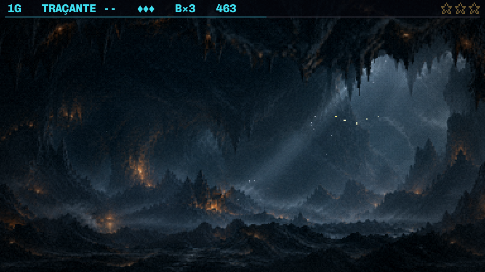
2. Quatro lugares
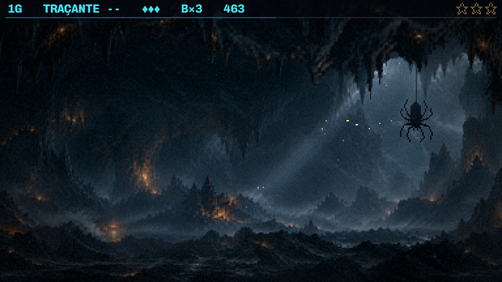
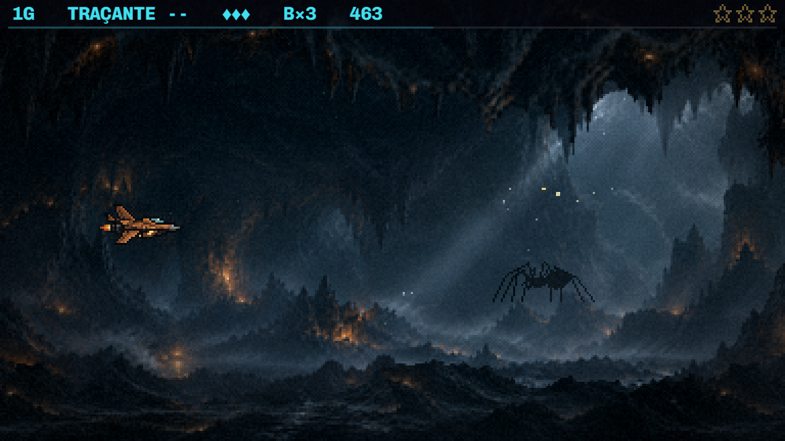
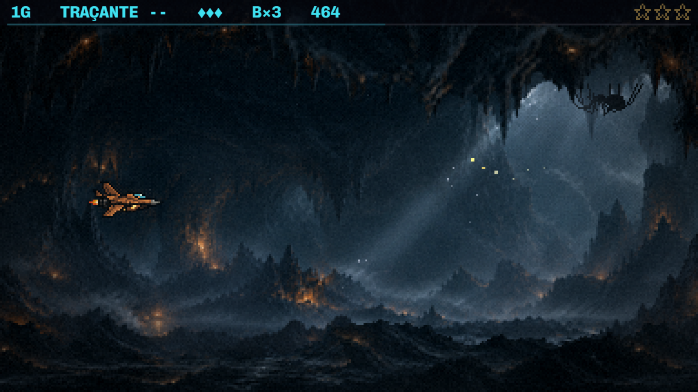
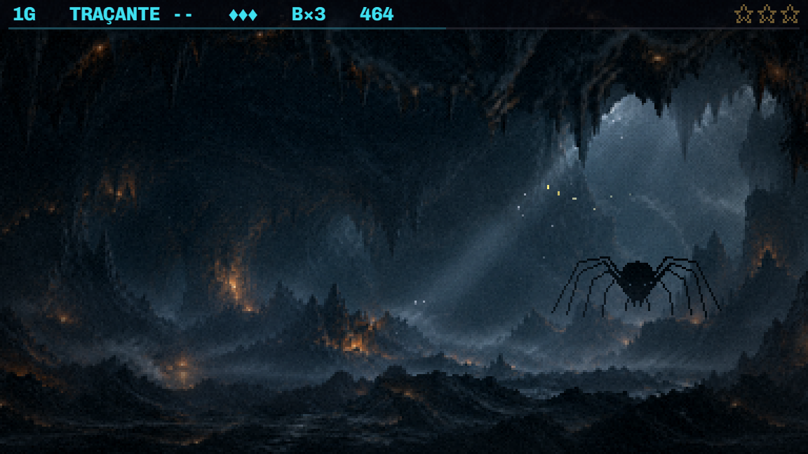
3. Preto puro ou com aro
À esquerda, preto puro: só a forma. À direita, um aro de 1 px na cor da luz fria, só no contorno de fora e só onde o corpo tem pelo menos 3 px de espessura. As pernas ficam pretas, porque um aro numa perna de 1 px acende a perna inteira.
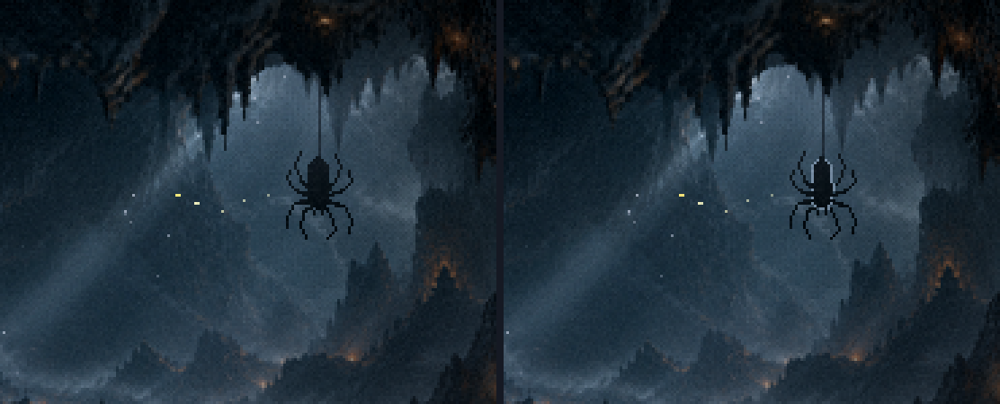
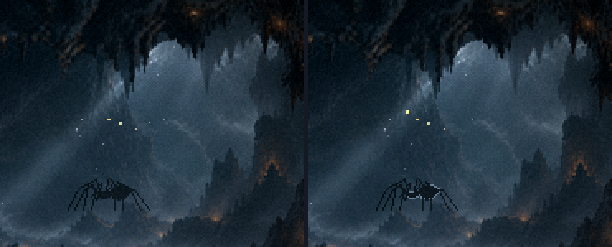
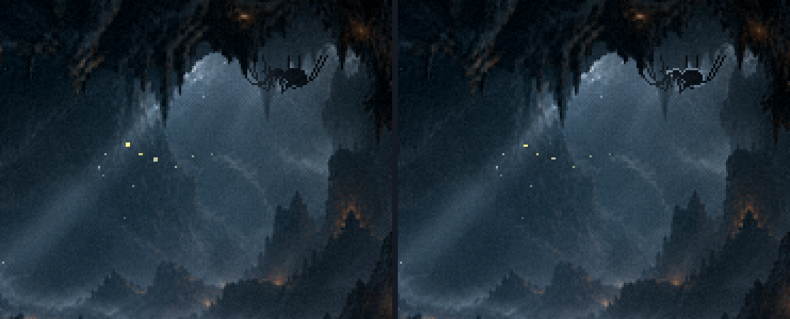
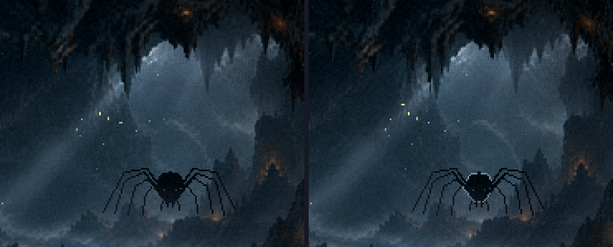
4. Os sprites
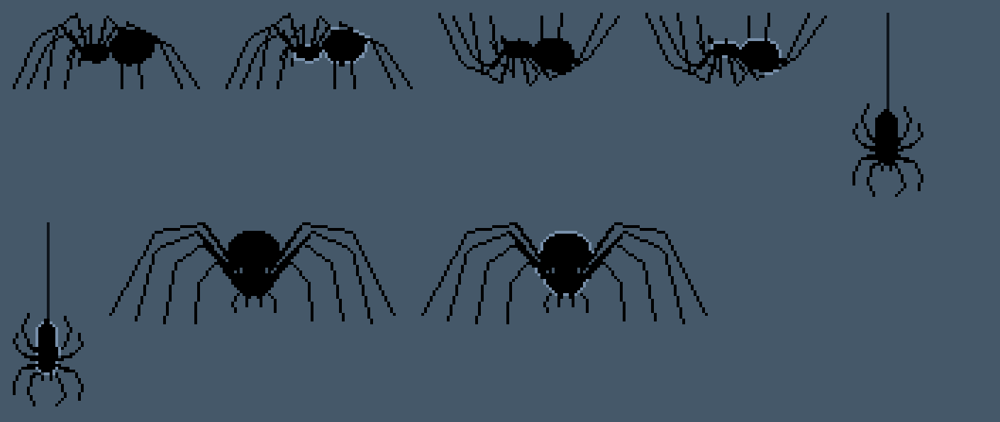
5. O PixelLab, para comparar
Pedi duas ao PixelLab antes de desenhar: uma de perfil (Pro Flash, paleta de 2 cores) e uma pendurada (Pixflux, sem contorno). As duas saíram de desenho animado: a de perfil lê como formiga, e a pendurada é uma aranhinha de Halloween. Por isso fiquei com a de código.
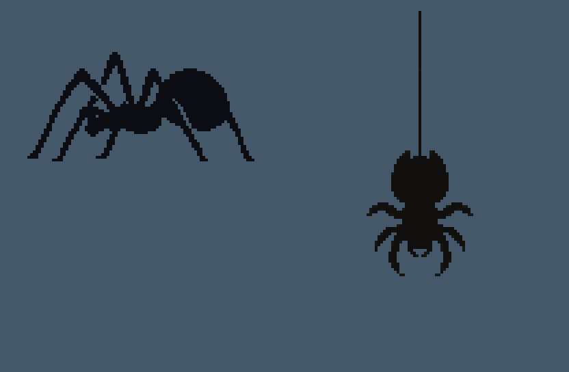
6. O que eu recomendo
A, a pendurada, em preto puro.
- É a que lê mais claro: fica inteira contra a parte mais clara da abertura.
- É pequena, como pede a regra do fundo (o que está longe diminui).
- O fio prende a aranha no teto, então ela não flutua, e ainda dá a altura do salão.
- A D (de frente) assusta mais, mas no tamanho em que lê ela tem 81 px de largura e fica na altura da nave. No meio da luta, pode parecer um inimigo.
7. O que eu preciso de você
- Qual lugar (A, B, C ou D), ou mais de um.
- Preto puro ou com aro.
- O tamanho, se quiser maior ou menor: o desenho sai de novo em qualquer escala.
- Parada ou com vida. Ela pode ficar imóvel, ou mexer bem pouco: a pendurada balançando no fio ou descendo devagar, a do vale dando um passo. Mas a memória do projeto diz que criatura animada sai do PixelLab inteira, e não em partes mexidas por código. Então só faço o movimento por código se você quiser assim.
8. Ela anda, no jogo
Você escolheu a C, em preto puro: "é bom que ela fique atrás das estalactites". E o seu desenho: "ela sai do ponto inicial, faz o movimento que eu te falei, mas ela sai para a esquerda (passando por trás da estalactite) e sai naquele canto mais escuro, faz o movimento de olhar e virar e sai para trás daquela outra estalactite".
- Na boca de luz da abertura, ela olha para a nave mexendo as pernas: as da frente sobem e tateiam, as segundas batem. Isso dura 1,3 s.
- Vira para a câmera (a "frente"), encara 0,7 s e volta ao perfil.
- Corre para a esquerda pelo teto, por trás das duas estalactites da abertura, até o canto escuro (2,5 s). Sai e chega devagar, e as pernas seguem a distância andada, então os pés não escorregam.
- No canto, olha (0,9 s), vira para a câmera, encara e volta.
- Sai pela curva do seu desenho, por trás da outra estalactite, e some. São uns 10 s ao todo, e o roteiro começa quando a rocha da entrada sai da frente da abertura.
Como ela passa por trás: ela mora na pintura do salão. Por cima dela vai um recorte da própria pintura, só nos pixels de rocha: as estalactites da abertura e o canto onde ela some. Como o recorte é a pintura mesma, não aparece emenda.
A virada é o mesmo desenho girando. Cada junta tem o lugar do perfil e o da vista de frente, e o giro mistura os dois. O primeiro quadro é a C que você aprovou, pixel a pixel.
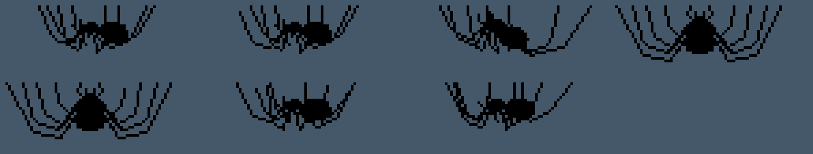
9. O canto escuro
Decidido em 27/10: fica assim. Você: "é exatamente essa sensação que eu quero passar. Ela sai do lado mais luminoso e foge para as sombras, típico de uma aranha."
Na luz da abertura ela lê bem. No canto escuro, preta contra a rocha escura, ela vira só uma sombra: olhar e virar ali quase não se vê. A imagem abaixo é o canto com o contraste aumentado 4 vezes. Ela está lá, de perfil e virando, mas na tela normal mal aparece.
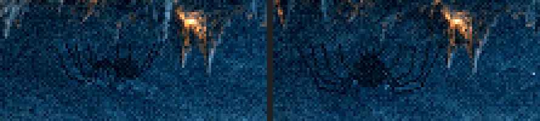
O que dá para fazer:
- Deixar assim: no canto ela é uma sombra que se mexe, e só quem olha com atenção vê.
- Um aro de luz fria só no canto escuro: o contorno de 1 px da seção 3, aceso só enquanto ela está ali. Na luz, continua preto puro.
- Mudar o ponto 2 para uns 20 a 30 px à direita, onde a parede de trás clareia com o facho.
Como saiu
- O desenho:
scripts/_g/_aranha-silhueta.mjs <pasta>. As quatro poses são esqueletos em px (POSES), ekmuda a escala.desenharAranhafaz a máscara, epintarAranhapinta o preto ou o aro. - A montagem no jogo:
scripts/_g/_aranha-maquete.mjs <pasta> <conceitos.json>. Roda a F1 até o meio do salão e põe a aranha só naquela página, sem tocar emsrc/. Ela fica na profundidade −82,9: acima da pintura e das brasas dela, abaixo da bruma de trás (−82,6). Também segue a máscara do salão e a deriva da pintura. - Os lugares, em px da pintura do salão (429 × 216): A, o fio em (333, 44); B, os pés em (278, 147); C, o teto em (345, 46); D, os pés em (318, 150).
- No jogo (27/10):
scripts/_g/_aranha-caverna-f1.mjsassa três arquivos empublic/sprites/f1/:aranha.png(35 quadros numa fileira: parada, olha, vira, encara, anda),aranha.json(a célula, a origem, a linha dos pés, os grupos e o passo) ecav-aranha-frente.png(o recorte das estalactites).- O desenho que gira é o
poseAranha(o perfil e a frente misturados pelo ângulo).marchasão as pernas andando, em dois grupos alternados de quatro, como numa aranha, einquietasão as pernas enquanto ela olha. src/f1/aranhaCaverna.tsroda o roteiro, e os números estão emARANHA_F1(numerosF1.ts): o início, os dois caminhos em px da pintura, os tempos e a velocidade. AmontarCavernaa liga, desliga e põe no lugar a cada quadro.scripts/_g/_aranha-filme.mjsfilma o salão no jogo.- A sonda da caverna e o teste de geometria seguem passando inteiros.